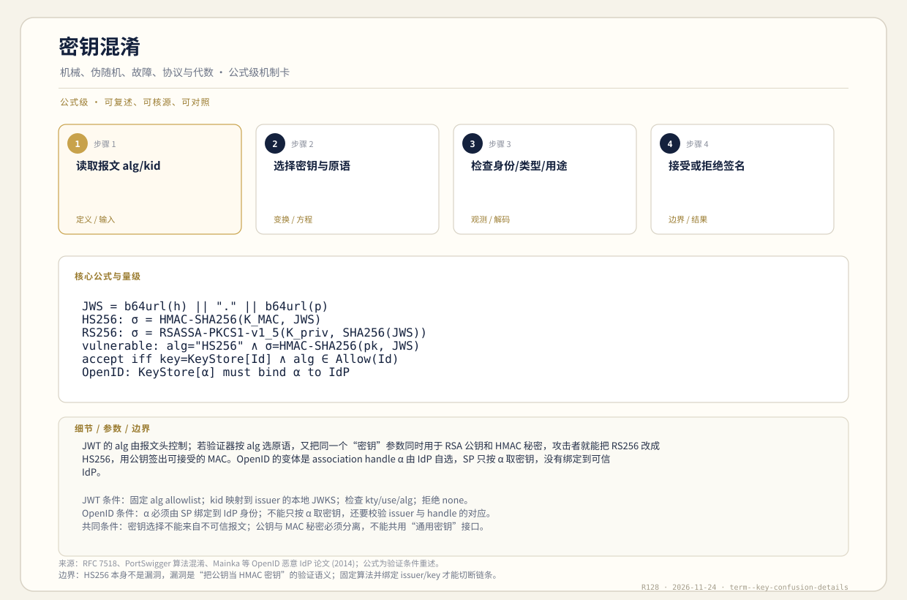

原理与机制
术语：密钥混淆（Key Confusion）。JWS 把头部 (h) 和载荷 (p) 编码为 (b64url(h)\cdot b64url(p))，算法由头部字段 alg 指定。HS256 用共享密钥 (K_{MAC}) 计算 (\sigma=HMAC\text{-}SHA256(K_{MAC},JWS))；RS256 用 RSA 私钥对 SHA-256 摘要做 RSASSA-PKCS1-v1_5。密钥混淆发生在验证器没有把“密钥身份、密钥类型、算法、用途”绑定在一起的时候：攻击者把 alg 改成 HS256，把 RSA 公钥 (pk) 当作 HMAC 密钥，计算 (\sigma=HMAC\text{-}SHA256(pk,JWS))。如果验证器按 alg 选原语、又直接拿 (pk) 当密钥，就会接受伪造签名。

为什么重要
密钥混淆不是“同一把密钥复用”这么简单，它是验证语义的错配：签名算法与 MAC 算法共享一个“密钥”接口，但公钥是公开的，不能当 MAC 秘密。JWT 的 alg 由报文头控制，kid/jku 又可能由报文选择密钥；OpenID 的 association handle 也可能由 IdP 自选。只要验证器相信报文里的标识，而不相信本地绑定的 issuer/key，就会把攻击者的密钥当成可信密钥。正确条件应写成：接受 ((Id,m,\sigma)) 当且仅当使用的是 (KeyStore[Id])，且 (alg\in Allow(Id))。
应用与实例
审计 JWT 时，先检查验证器是否对 alg 做 allowlist，是否把 kid 映射到本地 issuer 的 JWKS，是否检查 kty、use、alg 与密钥用途一致；再尝试把 RS256 改成 HS256，用公钥做 HMAC，看是否被拒。审计 OpenID 时，检查 association handle (\alpha) 是否由 SP 绑定到 IdP，还是由 IdP 自由选择；若 SP 只按 (\alpha) 取密钥，攻击者可以用自己的 IdP 覆盖可信 IdP 的 handle。两条检查都要求“密钥选择”不来自不可信报文。
边界与攻击面
失效边界包括：只检查 alg 字符串但不检查密钥类型；只验证 kid 存在但不验证它属于哪个 issuer；把 jku 指向的远程 JWKS 直接信任；以及把公钥和 HMAC 密钥放在同一个“通用密钥”接口里。反过来，若验证器固定算法、按 issuer 取本地 JWKS、拒绝 none、检查 kty/use/alg，密钥混淆链就被切断。注意，HS256 本身不是漏洞；漏洞是“用公钥当 HMAC 密钥”的验证语义。
历史与背景
2014 年 Mainka、Mladenov 与 Schwenk 用恶意 IdP 系统分析 OpenID，报告了 Key Confusion 等四类攻击，并在 16 个实现中确认 11 个受影响。2015 年 RFC 7518 把 HS256 与 RS256 分别定义为 HMAC 与 RSASSA-PKCS1-v1_5，算法标识由此标准化；此后 JWT 库的算法混淆问题被反复披露。R128 把“密钥混淆”从一句“密钥复用”改写为可检查的绑定条件，是为了让读者能直接拿它审计实现。
逐步示例与核验
定义检查模型
上位概念 → 区别特征 → 正例 → 反例 → 易混边界。正例必须落在外延内；反例必须刚好跨过边界；同义词不能代替定义。
参考出处
- Wikipedia search entry for 密钥混淆. https://zh.wikipedia.org/w/index.php?search=%E5%AF%86%E9%92%A5%E6%B7%B7%E6%B7%86
- RFC 4949: Internet Security Glossary, Version 2. https://www.rfc-editor.org/rfc/rfc4949